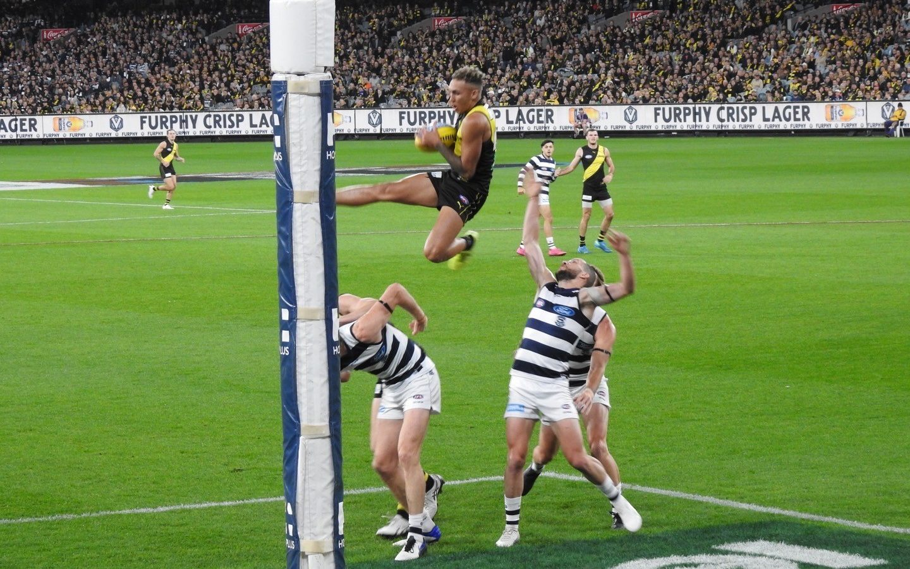

What's here
Coming next
Example · same chances, different result
Home14.892
Away10.1272
Both sides had 22 scoring shots. The 20-point margin is all goalkicking. Read a score as goals.behinds (points): 14.8 (92) is 14 goals and 8 behinds.


Three rules
How every piece worksShow the model
Every model has a page where you change the inputs and watch the maths move. Nothing is hidden behind a number.
Check the model
Each one publishes its own report card: how often its 70% calls came true, and where it goes wrong.
Tell the story
The numbers only matter for what they say about the season. Each model comes with commentary in plain words.